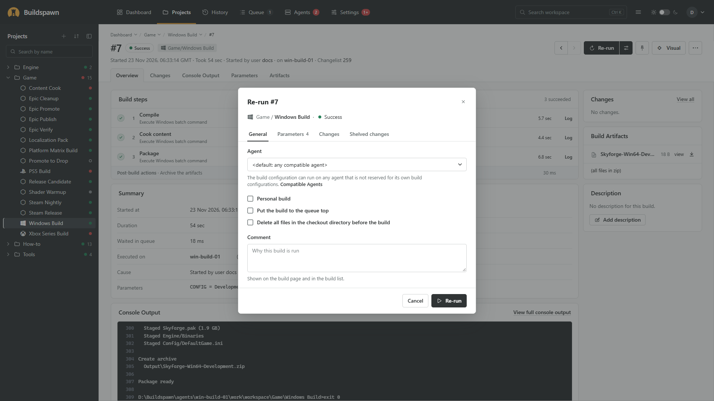
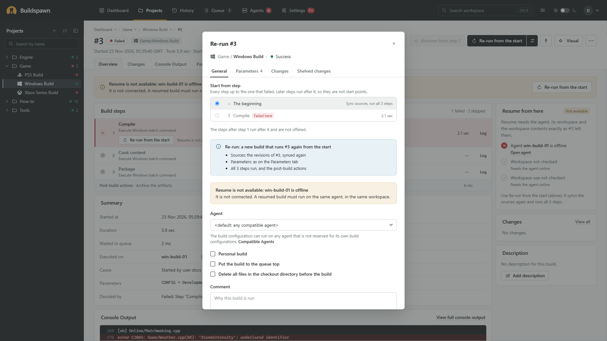

Re-run a build
Run a finished build again with exactly the same code and parameters, or change some of them first.
Every finished build can be re-run, whatever its result: successful, failed, unstable, stopped or personal. A re-run is a new build with a new number. You need the permission to run the build configuration.
Re-run
- Open the build, for example Windows Build #6.
- Click Re-run, the main button at the top right.
You can also use the ⋯ menu of a row in the build history: it has Re-run and Re-run with changes.
A re-run builds the same sources as the original:
- the same Git commit and the same Perforce changelist, for every root;
- the same shelves, for a personal build;
- the same parameters, passwords included (reused, never shown);
- by default, the same dependency builds.
If a revision no longer exists, for example a deleted branch, the re-run stops with a clear message instead of building something else.
The new build says Re-run of #6 by <you> with a link to the original and lists its sources. The original lists its re-runs.
A re-run uses the build configuration's current settings and steps, not the ones from the time of the original. File parameters are not reused.
Re-run with changes
Use this when you want the same build, but with one thing different: another changelist, another value, another shelf.
- Open the build.
- Click the button with the sliders beside Re-run. Its tooltip says Re-run with changes….
- The Re-run dialog opens, filled in from the original. Change what you need (see below).
- Click Re-run. Click Cancel to close without starting anything.

| Tab | What you can change |
|---|---|
| General | The agent, queue top, clean checkout and comment, as in the Run dialog. For each Git root a Source row: Same as #6, Latest, or Other commit… (a commit, tag or branch such as main). For dependencies: Reuse the dependency builds of #6, or rebuild them. |
| Parameters | The values of the original. Change any of them. |
| Changes | For Perforce: the original changelist, the latest, or another changelist. |
| Shelved changes | Pick other shelves, or remove the original's shelf. |
The agent, queue position, clean checkout and comment are not taken from the original. Choose them again if you need them.
Resume a failed build
A failed or stopped build can also be resumed: the new build starts at the failed step and reuses the sources, agent and workspace of the original, instead of running every step again. That is much faster for a long build that failed near the end. When resume is not possible, the main button changes to Re-run from the start. In the Re-run dialog of such a build, Start from step lets you choose The beginning (a re-run) or a step (a resume). See Resume a build and Resume and retry.

Re-run a Matrix combination
For a build with a Matrix block, the build page shows a grid of the results. Each combination has its own Re-run. See Parallel and composite builds.
Re-run a shared personal build
Someone who views a personal build only through a share link cannot re-run it. See Shared builds.
Problems and fixes
| Problem | What to do |
|---|---|
| The re-run stops with a message about a revision. | The revision no longer exists, for example a deleted branch. Re-run with changes and pick Latest or another commit. |
| There is no Re-run button. | You may not run this build configuration, or you only view a shared personal build. |
| The re-run behaves differently from the original. | It uses the build configuration's current steps and settings. File parameters are not reused. |
Tips
- Re-run a failed build to check whether a failure is flaky: same code, same values.
- Use Latest on the Source row to build today's code with last week's parameters.
- To retry failed builds on their own, add a Retry build trigger. See Triggers.